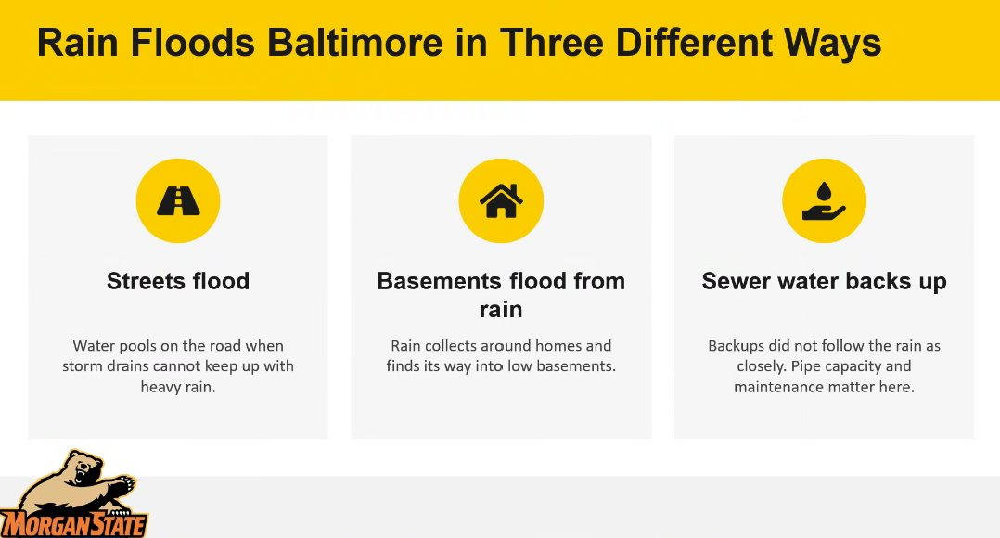
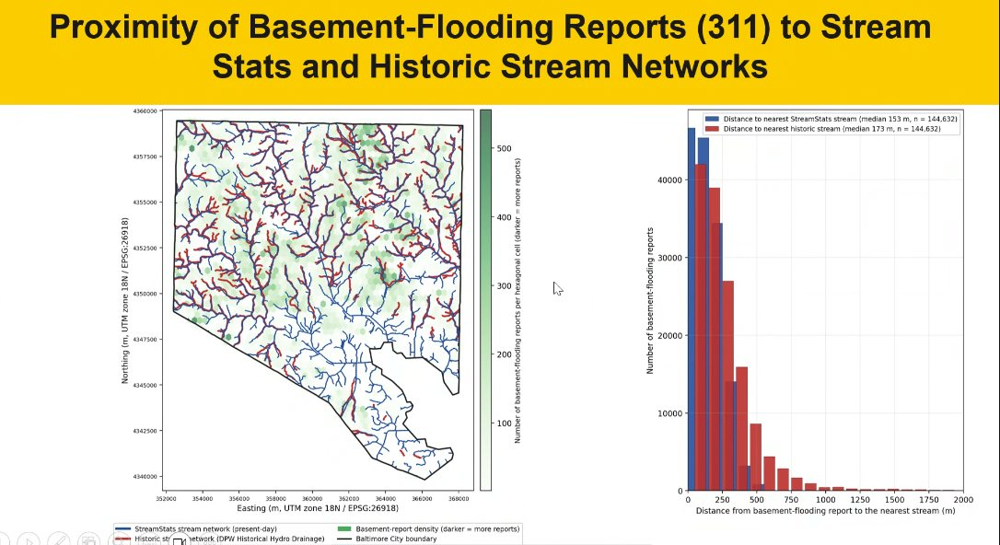
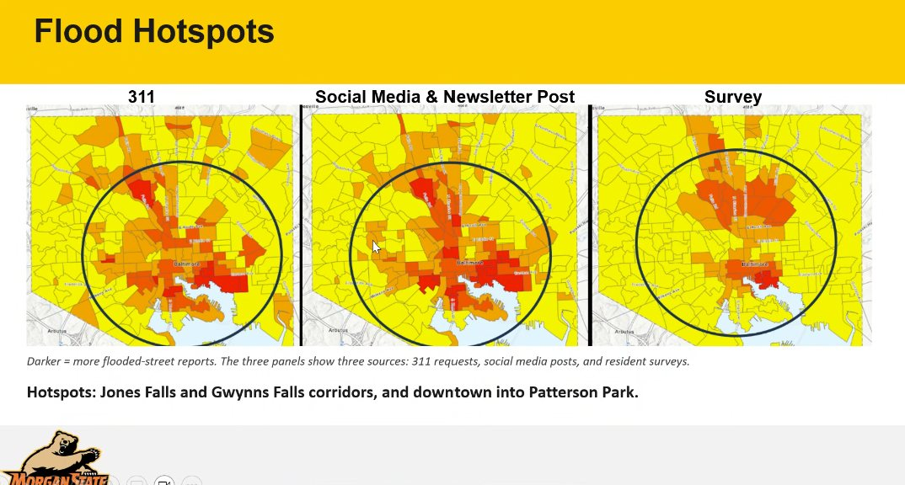
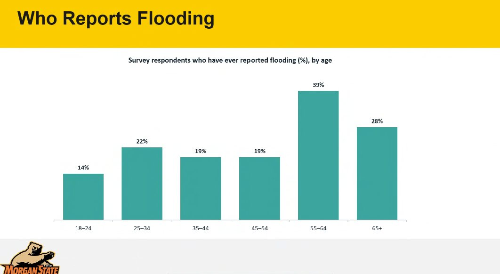
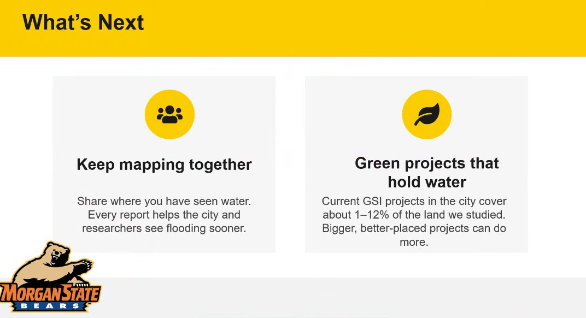
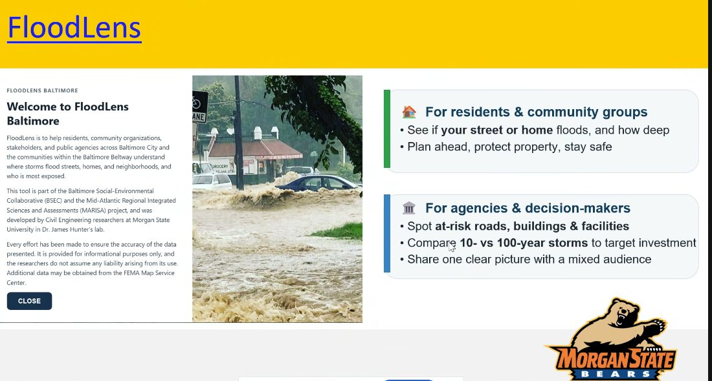

Summary
Caleb Buahin and Corinne Wiesner-Friedman reported on the SWMM6 initiative and its EWRI Opportunity Fund grant. Members discussed how ASCE can set vendor-neutral benchmarks for hydrologic and hydraulic models, and Julia Atayi of Morgan State University gave the Modeler Minute on urban flooding in Baltimore.
The committee launched its new website at ewri-stormwater.org and encouraged members to submit abstracts to the new EWRI Modeling Confluence in August 2027. Robert Traver said he was impressed with the direction of the committee.
Action items
- Scott Jeffers — Gather the notes and materials from the Anchorage SWMM training and the Mobile workshop as the basis for a future training in Reston, VA.
- Mitch Heineman — Provide an update on NOAA Atlas 15 for the Design Storm Standards task committee.
- Scott Jeffers — Share the current benchmark prototype for feedback, adding a third category of tests based on observed field-study data.
- Corinne Wiesner-Friedman & Caleb Buahin — Propose an Introduction to SWMM6 session for the EWRI Modeling Confluence.
- Erica McKenzie — Look into meet-up options for the committee at ASCE2027 in Philadelphia.
- Robert Dickinson — Present the March Modeler Minute: SWMM5 RASPIPE v1.3.
- All members — Promote the EWRI Modeling Confluence call for abstracts (due December 9, 2026) to your groups and networks.
- Interested members — Consider applying to the FY27–28 EWRI Opportunity Fund (applications due December 14, 2026).
Discussion
SWMM6 initiative and EWRI leadership
Corinne Wiesner-Friedman and Caleb Buahin met with EWRI leadership, where they previewed the open SWMM work and reported on progress under the FY26–27 EWRI Opportunity Fund grant for SWMM6. Applications for the FY27–28 Opportunity Fund are due December 14, 2026; Eddie Tiernan expressed interest in applying.
Teaching Tools
The task committee reviewed the workshop at the EWRI Congress in Mobile and the earlier SWMM training in Anchorage. The plan is to build on those materials for a future training in Reston, Virginia.
Design Storm Standards
Robert Traver reported that NOAA Atlas 15 has been delayed and that a one-year review period is expected once it is released. The committee will ask Mitch Heineman for an update.
SWMM testing and benchmarking
Members discussed benchmarking SWMM and EPANET and setting standards, noting that ASCE is well placed to take a vendor-neutral position on hydrologic and hydraulic testing. Robert Dickinson has recreated SWMM 1 through 4, which can also be used for testing, and comparisons with HEC-RAS pipe networks and InfoWorks ICM are available. Corinne Wiesner-Friedman has an existing testing procedure.
The discussion separated two kinds of tests, comparisons between models and comparisons against known analytical or empirical results, and the group added a third: observed data from field studies. Robert Dickinson stressed the need for a way to check that a model was built properly (“water flows downhill”), and Caleb Buahin noted that model results always need to be put in context. Robert Traver is interested in extending the tests to elements such as green infrastructure. Scott Jeffers asked for feedback on the current benchmark prototype.
ASCE AI RACE
Members discussed ASCE’s AI RACE initiative. Robert Dickinson suggested fields that an AI-use disclosure for modeling work should carry:
- Model version and deployment type (vendor-hosted or self-built)
- Capability level: assistive, agentic or autonomous
- Tasks deliberately done without AI
- Assumptions the AI proposed, and which were accepted, changed or rejected
- Consequence of error, with verification depth to match
- Limitations and conditions of applicability
- Data handling: whether client or NDA-bound models were sent to an AI service
- Signature and date
Modeler Minute: Urban Flooding in Baltimore
Julia Atayi, a Ph.D. candidate at Morgan State University, presented her work mapping urban flooding in Baltimore. She combined 311 service requests, social media posts and resident surveys to locate where streets and basements flood, used those flooding images and reports to focus her flood modeling and impact analysis, and compared modeled water depths with photographs at locations such as Tiffany Run, the Patapsco, Frederick Avenue and the Inner Harbor. Hotspots include the Jones Falls and Gwynns Falls corridors and downtown into Patterson Park. Her work is part of FloodLens Baltimore, a tool developed in Dr. James Hunter’s lab to help residents and agencies see where storms flood streets, homes and neighborhoods.






Future Modeler Minute: Robert Dickinson will present in March on SWMM5 RASPIPE v1.3, EPA SWMM 5.2.4 with a semi-implicit pipe solver built from the published HEC-RAS method. Volunteers for later meetings are welcome.
Conferences
Around 300 people attended the Villanova Urban Stormwater Partnership Symposium. Eddie Tiernan attended WEFTEC and reported that he, Sazzad Sharior and Paul Boulos are signing up for the EWRI Modeling Confluence. Caleb Buahin and Corinne Wiesner-Friedman plan to attend ICWMM in Toronto, and are discussing a workshop at the ASFPM conference in Pittsburgh in late May 2027.
Members are asked to share the Modeling Confluence call for abstracts with their networks. Organizers are also looking for help with the technical program, local hosting and sponsorship/exhibits.
Outreach
The committee website has moved to ewri-stormwater.org, and its source is on GitHub. Members discussed co-marketing on LinkedIn.
Agenda
- Call to order and roll call
- Committee officer update
- UWRRC and EWRI updates
- Purpose and future of this committee
- Task committee updates
- Teaching Tools
- Design Storm Standards
- SWMM Testing Protocol
- SWMM6 Initiative
- Call for new task committee ideas
- Modeler Minute
- Julia Atayi (Morgan State University)
- Seeking future presenters
- Model updates and related news
- HEC-RAS 7.0 / RAS 2025 beta 0.1
- FY26–27 EWRI Opportunity Fund (SWMM6)
- FY27–28 EWRI Opportunity Fund (applications due December 14, 2026)
- Outreach
- Website, now at ewri-stormwater.org
- GitHub repository for the website
- LinkedIn: co-marketing efforts
- Conference reports
- 12th Novatech, Lyon, France (June 2026)
- ASCE-EWRI Watershed Management, Reston, VA (August 2026)
- StormCon 2026, Minneapolis, MN (August 2026)
- WEFTEC 2026, New Orleans, LA (September 2026)
- Villanova Urban Stormwater Partnership Symposium, Philadelphia, PA (October 2026)
- AWRA 2026 Water Resources Conference, Philadelphia, PA (November 2026)
- Upcoming events
- ASCE2027, Philadelphia, PA (March 1–5, 2027)
- EWRI Modeling Confluence, Reston, VA (August 8–11, 2027); call for abstracts due December 9; planning help wanted for the technical program, local host and sponsorship/exhibits
- 60th ICWMM, Toronto (February 24–26, 2027)
- 17th ICUD, Ningbo, China (June 6–11, 2027)
- StormCon 2027, Reno, NV (August 24–26, 2027)
- Next meetings
- Hybrid meetings at ASCE2027 in March and at the EWRI Modeling Confluence in August
Attendance
- Erica McKenzie
- Michael Gregory
- Scott Jeffers
- Haseeb Payab
- Robert Traver
- Robert Dickinson
- Ben Hodges
- Caleb Buahin
- Corinne Wiesner-Friedman
- Eddie Tiernan
- Harry Zhang (WRF)
- Holly Herring
- Julia Atayi
- Laney Nelson
- Omid Razavi
- Willie Goonwa
Notes taken by the secretary and edited for clarity. Contact the secretary with any corrections.